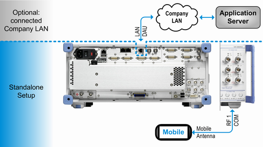
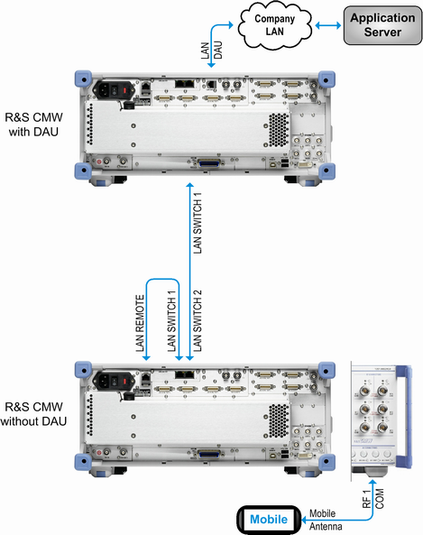

A standalone test setup comprises the DUT, the R&S CMW and at least one RF connection between them. The DUT can access embedded DAU services, for example browse pages of the built-in web server or exchange files with the built-in FTP server.
It depends on the application used to set up the IP connection and its configuration, whether one or more RF connections are required and which RF connectors can be used. For details, refer to the documentation of the relevant signaling application or to the protocol test documentation. Set up the RF connections as described there.
The used RF path (connector and converter) is known by the used application, but not by the DAU. The DAU accesses the established IP connection via an internal Ethernet connection to the signaling units.
For scenarios involving only one downlink carrier and one uplink carrier, you use typically an RF COM connector, e.g. RF 1 COM, as shown in the following figure.

If you want to access external services with the DUT, connect the external network to the LAN DAU connector at the rear panel of the instrument. Typically, you connect your company LAN. With this setup, the DUT can access the network connected to the LAN DAU connector and other networks reachable via this network, e.g. an application server on the Internet. It can also access embedded DAU services, as with a standalone setup.
Note that only the LAN DAU connector allows the DAU and thus the DUT to access an external network and can be used for U-plane tests. The other LAN connectors of the instrument cannot be used for this purpose. Especially do never connect your company LAN to the LAN SWITCH connector.
If you use a standalone test setup, you can use the predefined internal IP configuration. The default IP settings of the DAU are compatible to a standalone setup. No IP network configuration is required. But the DUT can only access the embedded DAU services, not an external network.
If you connect an external network, you must configure the IP network settings of the DAU compatible to the connected network. So more configuration than for a standalone setup is required. In return, the DUT can access the external network.
Standalone test setup | Test setup with external network |
|---|---|
No external Ethernet connection is required. | The external network must be connected to the LAN DAU connector. |
The predefined DAU IP configuration is ready-to-use. | The DAU IP configuration must be adapted to the external network. Dynamic or static IP configuration is possible. |
The DUT can only access IP services provided by the DAU. The setup, the services and the configuration are optimized for maximum throughput on IP level. | The DUT can access IP services provided by the DAU and also IP services running on an external application server in the company LAN or on the Internet. |
Usually, the DAU is installed on the R&S CMW that establishes the IP connection to the DUT (internal DAU). If all expansion slots of this R&S CMW are occupied by other hardware options, a DAU installed on another R&S CMW can be used instead (external DAU).
For such an external DAU setup, you need option R&S CMW-KA120 on both R&S CMW. Both instruments must be equipped with an Ethernet switch (option R&S CMW‑B660x plus -B661x).
Connect the two Ethernet switches via a LAN cable as shown in the following figure. If you have the latest Ethernet switch (R&S CMW-B661H), you can use any LAN SWITCH port (no 1 or no 2).
If you have an old Ethernet switch (R&S CMW-B661A) at the R&S CMW without DAU, connect the LAN REMOTE connector to the Ethernet switch with a short patch cable.

The patch cable is only functional if the "Lan Remote" network adapter is integrated into the internal IPv4 subnet of the instrument. For configuration of a compatible "Lan Remote" IP address, refer to the description of the "Setup" dialog in the R&S CMW user manual.
In the R&S CMW without DAU, you must enable the usage of the external DAU and enter information about the subnet of the R&S CMW with DAU. These settings are provided by the application that establishes the IP connection, for example the LTE signaling application. Refer to the documentation of that application.
You can connect only one instrument without DAU to an instrument with DAU. You can use the DAU for IP connections at both instruments, even simultaneously. However, the DAU resources are shared by all applications using the DAU. To reach high data rates, use the DAU for one application at a time.
If you have the DAU version R&S CMW-B450H, you find a USB DAU connector on the rear panel. This connector provides a USB 3.0 SuperSpeed connection to the DAU.
A typical use case is to connect an external hard drive with media files. The mounted drive is accessible as folder of the samba share of the DAU, see "Using the System Drive of the DAU".